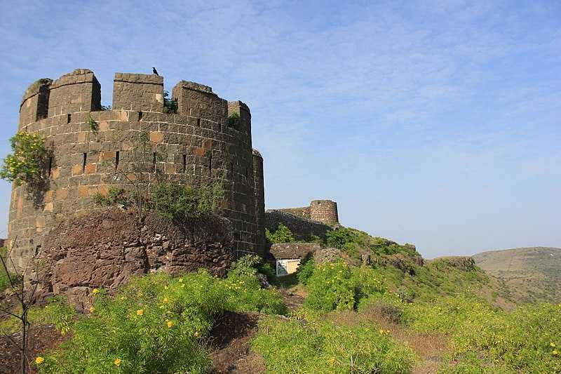

🌟 Featured Forts

📍 30 km from Pune
📏 1,312 m
⭐ Famous Battle
Site of the historic Battle of Sinhagad, where Tanaji Malusare sacrificed his life for the Maratha cause.
Explore Fort →
📍 Near Lonavala
📏 1,033 m
⭐ Easy Trek
Famous for the unique Vinchukata (Scorpion Tail) and breathtaking views of Pawana Lake.
Explore Fort →
📍 40 km from Pune
📏 1,388 m
⭐ Historical Treaty
Witness to the historic Treaty of Purandar and birthplace of the great Maratha warrior Sambhaji Maharaj.
Explore Fort →

📍 Near Khandala
📏 1,047 m
⭐ Serene Views
A peaceful hill fortress offering tranquility and spectacular sunrise views over the Western Ghats.
Explore Fort →
📍 Near Lonavala
📏 3,000 ft
⭐ Twin Peaks
Twin forts Shrivardhan and Manaranjan, connected by a beautiful plateau and ancient Buddhist caves.
Explore Fort →